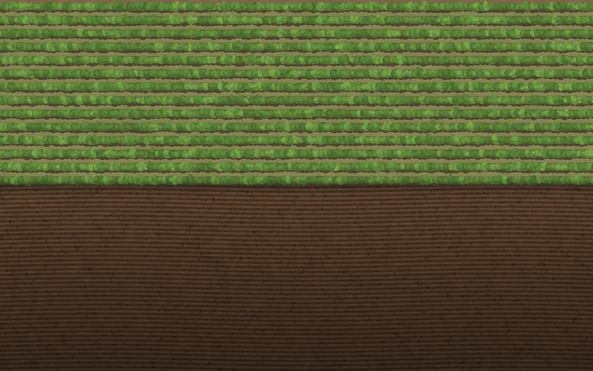
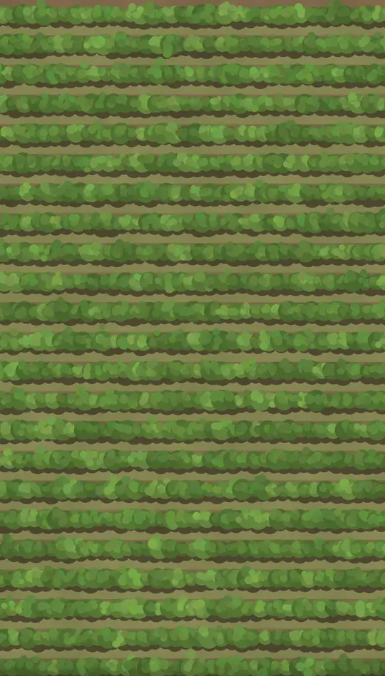
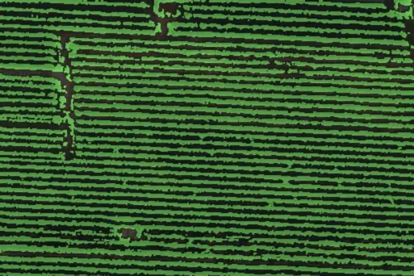
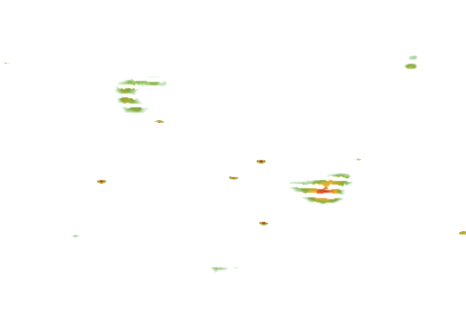
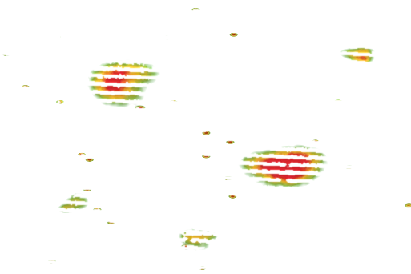
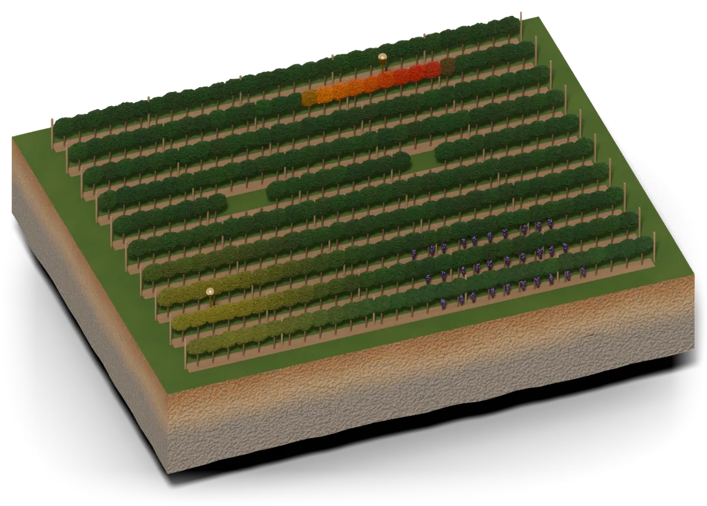

Scopri quali piante stanno soffrendo, prima che sia evidente in campo
Immagini satellitari ad altissima risoluzione e intelligenza artificiale, in una mappa che ti segnala dove intervenire.
Provalo gratisCos’è Fitosat

- Cos’è
- Un servizio online che osserva le tue coltivazioni dal cielo, quando vuoi tu.
- A cosa serve
- Individuare in tempo le piante stressate e trattare in modo mirato.
- Cosa ricevi
- Mappa di vigoria, avvisi, rischio zona per zona e storico delle stagioni.
- Per chi
- Aziende agricole, consorzi, vivai, agronomi e tecnici.
Quando la vedi, è già tardi
Quando i sintomi compaiono, il problema si è già esteso. Per intervenire prima serve osservare ogni pianta, con regolarità, su superfici che nessuno può percorrere a piedi.
-
fino al 40%
della produzione agricola mondiale persa ogni anno per parassiti e malattie,
oltre 220 mld $di danni economici all’anno.
FAO, maggio 2026 -
circa 10 mln
di ulivi colpiti in Puglia dal 2013 da un solo batterio da quarantena.
Stima Regione Puglia, via Il Post, 2026 -
316.000 t
di pesticidi venduti nell’UE nel 2024, l’8% in più rispetto al 2023.
Eurostat, maggio 2026 -
1,1 mln
di aziende agricole in Italia: solo il 18,5% usa strumenti informatici.
Istat, luglio 2026
Dallo spazio alle tue piante
Una sola immagine copre centinaia di ettari senza perdere il dettaglio del campo. Fitosat la unisce a meteo e suolo in una mappa del rischio.
- Accesso
- ovunque, senza entrare in campo
- Copertura
- tutti i tuoi ettari, ovunque si trovino
- Dettaglio
- da piccoli gruppi di piante al singolo albero, secondo la coltura
Osserva
Un’immagine dal cielo di tutta l’azienda, ad altissima risoluzione.
- Vigoria regolare
- Da tenere d’occhio
- Da verificare in campo
Guarda come cambiano le tue colture
Ogni immagine entra nello storico: confronti le stagioni e verifichi l’effetto degli interventi.
Trascina il cursore.



Uno strumento per decidere
Oggi ti mostra dove le piante stanno cedendo. Domani ti dirà dove una malattia è probabile, prima dei sintomi.
-
Ti avvisa
Una notifica quando qualcosa cambia, con il punto da controllare.
-
Coordina
Aziende e tecnici della stessa zona, in rete.
-
Guida l’intervento
Trattamenti solo dove servono, anche con macchine a rateo variabile.
Meno giri a vuoto, meno prodotto, meno costi.
La vite, la nostra prima applicazione
Fitosat è nato in vigna, nel primo Paese produttore di vino al mondo.
Perché da vicino
- Coltura perenne: ogni pianta persa vale anni di produzione.
- I problemi partono da poche piante e si allargano lentamente.
- I filari si leggono bene dall’alto, uno per uno.

Vigoria filare per filare
Fallanze e diradamenti
Vendemmia per zone
Stress idrico e nutrizionale
Controlli mirati
-
726.000 ha
di vigneti in Italia: primo Paese al mondo per produzione di vino.
OIV, maggio 2026 -
circa il 60%
dei fungicidi usati nell’Unione europea va alla viticoltura.
Commissione europea, CORDIS -
83%
delle viti esaminate in 218 vigneti dell’Alessandrino nel 2025 aveva sintomi di mal dell’esca.
Monitoraggio Cia, Confagricoltura, Coldiretti, Codial, 2026 -
circa 100.000
lavoratori stagionali dall’estero di cui l’agricoltura italiana ha bisogno ogni anno.
Confagricoltura, giugno 2025
Nato in vigna, pronto per crescere
Ogni coltura ha la sua geometria. Scegline una.
Vite
Filari continui e paralleli, a due o tre metri l’uno dall’altro.
Come si inizia
Programma pilota
Selezioniamo un numero limitato di aziende agricole per sperimentare Fitosat in campo, con istituti di ricerca del settore.
- Ci indichi i tuoi appezzamentiPosizione e confini delle parcelle.
- Fitosat li osservaPer tutta la stagione, senza che tu faccia nulla.
- Ricevi mappa e avvisiDove controllare e quando, da telefono o computer.
Presentato all’International Astronautical Congress 2024, Milano
Parliamone
Osservazione della Terra, dati sulle colture e intelligenza artificiale, per decisioni concrete in campo.
Filippo FerrucciFondatore e CEO
Si è formato in economia e politica e si è specializzato nel settore aerospaziale; oggi opera nella space economy, partendo dall’Italia. Porta la tecnologia satellitare ad alta definizione finalmente al servizio della terra, con la passione per la storia del vino e dei suoi territori.
Lorenzo GavazzeniCTO
Si è formato in modellistica ambientale e geoinformazione e trasforma i dati satellitari in indicazioni per il campo, integrandoli con quelli dei sensori intelligenti.